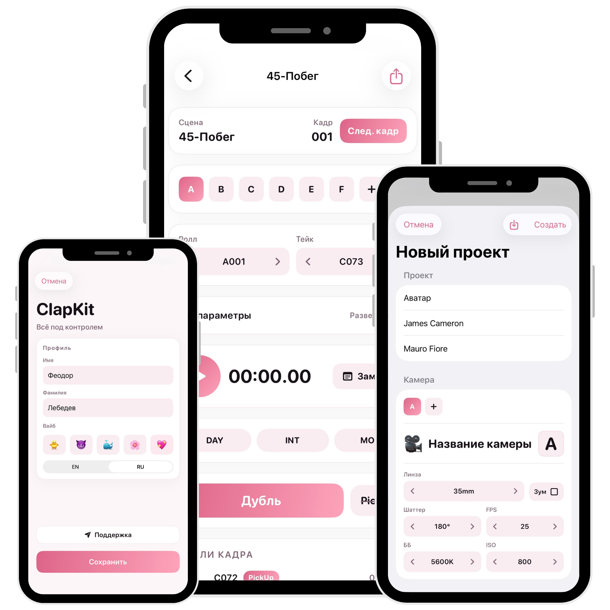

Структура проекта
Проект → День → Сцена → Кадр → Дубли. Без хаоса и лишних экранов.
Для реальной съёмочной площадки
Создавай проекты, фиксируй дубли, веди заметки и экспортируй отчёт сразу после смены. Всё аккуратно, быстро и по делу.
Сцены, кадры и дубли в едином потоке
Экспорт в CSV и XLSX
Передача проекта через .clap

Функции
Проект → День → Сцена → Кадр → Дубли. Без хаоса и лишних экранов.
Точное измерение хронометража прямо на рабочем экране с привязкой к дублю.
DAY/NIGHT, INT/EXT, SYNC/MOS, PickUp и заметки с быстрыми тегами.
Lens, FPS, Shutter, ISO, WB + расширенные параметры с сохранением последних значений.
До 12 камер в проекте, отдельные roll/file и техпараметры для каждой камеры.
Готовый отчёт в CSV/XLSX и перенос проекта между устройствами через .clap.
Как это выглядит в смене
Добавь базовую информацию и дефолтные параметры камеры.
Таймер, статусы, заметки и техданные фиксируются сразу в процессе съёмки.
Take автоинкремент, перенос нужных параметров и чистая структура данных.
Получи готовые таблицы и отправь команде без ручного переписывания.
Меньше ручного ввода, меньше ошибок, больше времени на реальную работу на площадке.
Написать в поддержку